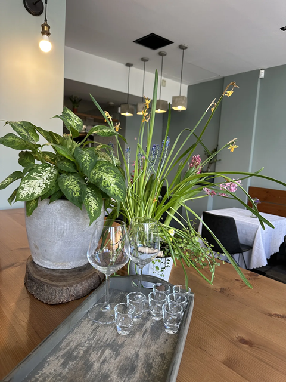
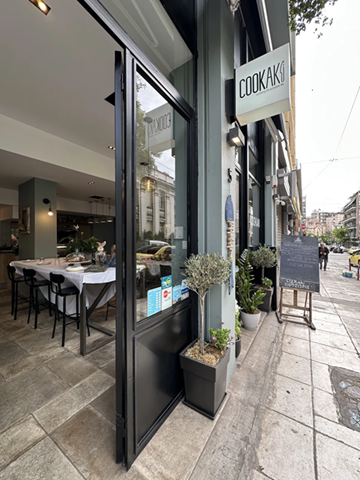
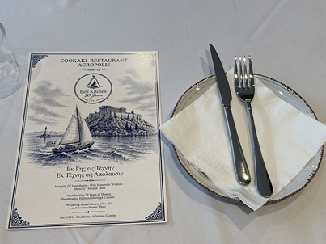

Φωτογραφίες
Μέσα στην κουζίνα, πάνω στο πιάτο
Έντιμες φωτογραφίες από τη σάλα μας στο Κουκάκι και την ανοιχτή κουζίνα μας — το φαγητό, τα στρωμένα τραπέζια, οι μικρές λεπτομέρειες που κάνουν αυτόν τον χώρο δικό μας. Πατήστε οποιαδήποτε εικόνα για μεγέθυνση.
 Η σάλα — Πετμεζά 5, Κουκάκι
Η σάλα — Πετμεζά 5, Κουκάκι
{kind=link}

Κρασί, φυτά και ένα τραπέζι που περιμένει{kind=link}

Θα μας βρείτε στην Πετμεζά 5, Κουκάκι Πετμεζά 5 — το μπλε ψάρι πάνω από την πόρτα
Πετμεζά 5 — το μπλε ψάρι πάνω από την πόρτα
 Άνοιξη στην Πετμεζά — το Κουκάκι ανθίζει
Άνοιξη στην Πετμεζά — το Κουκάκι ανθίζει
{kind=link}

Το μενού — όπως πάντα από το 1956 Οι λεπτομέρειες που κάνουν αυτόν τον χώρο δικό μας
Οι λεπτομέρειες που κάνουν αυτόν τον χώρο δικό μας
 Σούπα τραχανά — ένα χειμωνιάτικο τελετουργικό
Σούπα τραχανά — ένα χειμωνιάτικο τελετουργικό
Περισσότερα στο Instagram @cookaki_1956 και στο TikTok @cookaki_1956.
Έτοιμοι να καθίσετε σε αυτό το τραπέζι;
Κάντε κράτηση σε ένα λεπτό ή παραγγείλτε στο ξενοδοχείο σας — είμαστε πέντε λεπτά με τα πόδια από το Μουσείο Ακρόπολης.